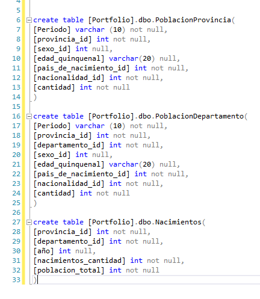

Informe de Población Argentina
Este proyecto analiza la población argentina utilizando datos oficiales obtenidos de la Dirección Nacional de Población del RENAPER, disponibles en la plataforma de datos del gobierno argentino Datos.gob.ar - Datasets. El informe ofrece una visión detallada de la demografía argentina a nivel provincial, departamental, y los nacimientos registrados entre 2012 y 2022, con Argentina como país de residencia.
Datos Utilizados:
- ⭐Fuente de datos: Dirección Nacional de Población del RENAPER.
- ⭐Periodo de análisis: Enero y agosto de 2023 para la población, y los nacimientos entre 2012 y 2022.
- ⭐Base de datos: Los datos se cargaron en SQL Server, donde se creó una estructura de base de datos con tablas y procedimientos almacenados.
Estructura del Informe
- Población por Provincia (enero de 2023):
- ⭐Descripción: Cantidad de personas residiendo en cada provincia de Argentina.
- ⭐Variables clave: Sexo, edad quinquenal, país de nacimiento y nacionalidad.
-
Población por Departamento (agosto de 2023):
- ⭐Descripción: Cantidad de personas residiendo en departamentos de Argentina.
- ⭐Variables clave: Sexo, edad quinquenal, país de nacimiento y nacionalidad.
-
Nacimientos (2012-2022):
- ⭐Descripción: Datos sobre los nacimientos en Argentina entre 2012 y 2022.
- ⭐Variables clave: Año de nacimiento y país de residencia.
Implementación SQL Server
El proyecto fue implementado utilizando una base de datos en SQL Server, donde se diseñó una estructura que permite una actualización acumulativa de los datos sin perder la información histórica.
Los pasos técnicos incluyen:
- Inserta los datos nuevos sin borrar los ya existentes.
- Garantiza que no haya duplicación de información.
- Actualiza el informe de manera acumulativa, permitiendo un análisis continuo.
- ⭐Creación de una base de datos: Se definieron tablas para almacenar los datos de población por provincia, departamento, y nacimientos.
- ⭐Análisis de Dimensiones: Se realizó un análisis exhaustivo para identificar las dimensiones clave, como provincia, departamento, edad y nacionalidad, lo que permitió la creación de tablas Dim. Esto optimizó el proceso de carga y consulta, facilitando la relación entre los datos y mejorando la eficiencia de las consultas.
- ⭐Procedimientos almacenados: Se crearon SPs que automatizan la carga de nuevos datos. Estos SPs:
Beneficios del Enfoque SQL Server
Este enfoque permite:
- ⭐Una actualización ágil y automatizada al cargar archivos nuevos.
- ⭐Preservación de datos históricos.
- ⭐Eliminación de duplicados.
- ⭐Asegura un proceso de mantenimiento sencillo y eficiente para el equipo.
- ⭐Este sistema proporciona un marco robusto para la gestión de grandes volúmenes de datos poblacionales, facilitando la actualización periódica y la generación de reportes confiables.
El reporte se divide en tres partes: la primera, segunda y tercera corresponden a las visualizaciones, y la cuarta es un detalle del trabajo realizado.
- Video de YouTube
- Desde la web de Power BI (para aquellos con cuenta paga, permitiendo la interactividad).
- Mediante imágenes estáticas.
- Trabajo Realizado.

El trabajo realizado en este reporte consta:
-
Análisis de los Archivos CSV
- Se descargaron los datasets proporcionados por el Gobierno Argentino desde la plataforma de datos.gob.ar. Estos archivos contenían información sobre la población por provincia y departamento, desglosada por sexo, edad quinquenal, país de nacimiento, nacionalidad, y nacimientos por año.
- Se analizaron los CSV para identificar qué columnas eran relevantes para la creación de las tablas y las dimensiones. También se detectaron problemas como la falta de IDs en ciertas provincias y departamentos, y la presencia de caracteres no válidos en los datos.
-
Diseño de la Base de Datos
- Se decidió crear una base de datos en SQL Server para almacenar y procesar los datos de manera eficiente, estructurada y acumulativa.
- Se diseñaron las siguientes tablas principales que almacenan los datos crudos:
 -
Creación de Dimensiones
- dimProvincia
- dimGenero
- dimPaisNacimiento
- dimNacionalidad
- dimDepartamento
-
Con base en el análisis inicial, se identificaron dimensiones clave para hacer más eficiente la carga de datos y optimizar consultas. Estas dimensiones se actualizan cada vez que se corre el proceso de carga de datos:
-
Creación de Procedimientos Almacenados
- Para automatizar el proceso de carga y evitar duplicados, se crearon procedimientos almacenados, que se encargan de importar los archivos, limpiar los datos y hacer los insert finales en las tablas.
- Importación a través de un BULK.
- Se utiliza el nombre del archivo para extraer la fecha del periodo.
- Se dropean y recrean las dimensiones mencionadas anteriormente.
- Los datos son cargados en una tabla temporal, donde se corrigen los caracteres no válidos y se asigna el periodo.
- Se eliminan los duplicados y los datos son insertados en la tabla final [PoblacionProvincia].
- Finalmente, se zipea el archivo y se mueve a una carpeta de procesados, añadiendo la fecha y hora actual al nombre del archivo.
- Se crea y actualiza la dimensión [dimDepartamento].
- Se corrigen problemas específicos del CSV de departamentos, como la falta de IDs en provincias y departamentos.
- Se agregan IDs específicos para casos como "General Felipe Varela" y "Ciudad Autónoma de Buenos Aires", utilizando sus códigos postales y IDs correspondientes.
- Se corrigen datos faltantes y caracteres no válidos.
- Se actualizan IDs y se hace un inner join con departamentos para asignar los IDs correspondientes.
- Los datos se insertan en la tabla [Nacimientos] tras eliminar duplicados.
- Los archivos se zipean y se mueven a su ubicación final.
SP para Población por Provincia:
-
Se desarrolló un procedimiento almacenado llamado [dbo].[spImportPoblacionProvincia] que sigue estos pasos:
SP para Población por Departamento:
-
El SP [dbo].[spImportPoblacionDepartamento] realiza pasos similares, con las siguientes diferencias:
SP para Nacimientos:
-
El procedimiento almacenado [dbo].[spImportNacimiento] sigue la misma lógica que los anteriores:
-
Automatización y Prevención de Duplicados
- Todos los SP fueron diseñados para automatizar la carga de datos de manera acumulativa, asegurando que no se pierda información previa.
- Se incluyó la lógica para evitar duplicados en cada paso del proceso, y se creó un sistema robusto de zipeado y almacenamiento histórico de los archivos procesados.
-
Zip y mover archivos procesados
- Una vez completado cada proceso de importación, los archivos CSV se zipean y se mueven a una carpeta específica de procesados, asegurando que los datos históricos permanezcan intactos y que los archivos no se reemplacen.
- El nombre de cada archivo zipeado incluye la fecha y hora del procesamiento, lo que permite una identificación precisa de cuándo fueron procesados los datos.
Beneficios de la Implementación
- ⭐Automatización Total: Los datos son procesados automáticamente con la simple carga de un archivo, sin necesidad de intervención manual.
- ⭐Eficiencia: El uso de dimensiones y la eliminación de duplicados optimizan el rendimiento y la calidad de los datos.
- ⭐Preservación Histórica: Los archivos zipeados garantizan la integridad de los datos históricos sin reemplazar archivos previos.
- ⭐Flexibilidad y Escalabilidad: El sistema puede fácilmente adaptarse a nuevas actualizaciones de datos, simplemente cargando nuevos archivos CSV y ejecutando los SP.